Food-class mask color legend
Component IDs use separate deterministic hues. Object IDs: grey=table, blue=vessel, yellow=card, coral=food. Depth uses the fixed 0.15–1.20 m scale.
Isolated food classes (41) isolated_dish Bottle-gourd-curry Bottle-gourd-curry
pair-2ef7e055e3941ec560f62be4Automated pair: PASS Card present — ID 7 / 60 mm Original RGB Food-class mask Component IDs Object IDs Metric depth, 0.15–1.20 m 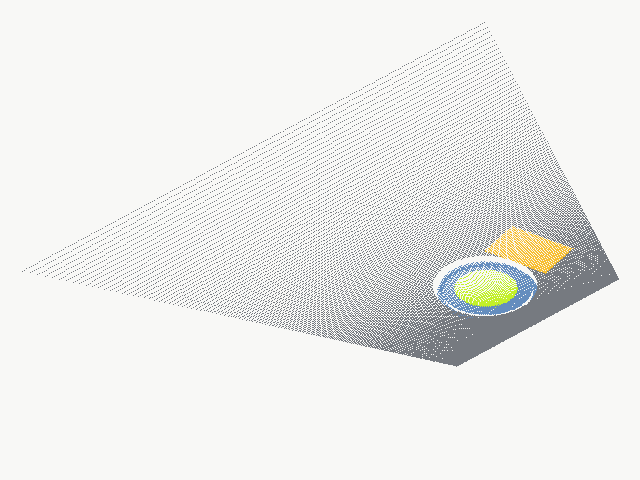
World-space geometry projection Scene: scene-ca04d703f518022046fc5fe0
Card absent Scene: scene-89bbafd35263226d47b26db1
Matched-pair checks PASS scene config equal except anchor cardPASS camera identicalPASS lighting identicalPASS background vessel noise identicalPASS food masks geometry mass volume density identicalPASS metric depth identical outside cardPASS world geometry identical outside cardPASS rgb differences confined to card edge tolerancePASS ID7 60mm only presentPhysical labels and density provenance component 1 — Bottle-gourd-curry : 130.00 g · 162.44 ml · 0.800 g/ml; data/wed_dishes.yaml#off_menu.Bottle-gourd-curry; [0.76, 1.14] (project-assumed uncertainty interval around configured class prior) Marker geometry label Marker label: DICT_4X4_50 id 7, 60.0 mm; tilt=39.9°; cm/px=0.112196; corners=[[435.8270893697562, 229.58400712685193], [487.23003222428474, 219.34797002857576], [517.2839126936728, 262.5275160804351], [461.8103015890881, 274.73091475589916]]
Human review: REVIEW_REQUIRED . Enter decisions in review_sheet.csv.
isolated_dish aloo-capsicum aloo-capsicum
pair-8974ac95ce8706892b4f22f8Automated pair: PASS Card present — ID 7 / 60 mm Original RGB Food-class mask 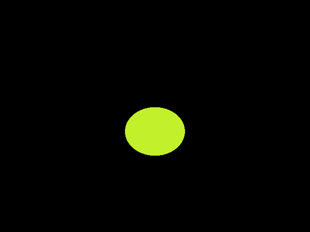
Component IDs Object IDs Metric depth, 0.15–1.20 m 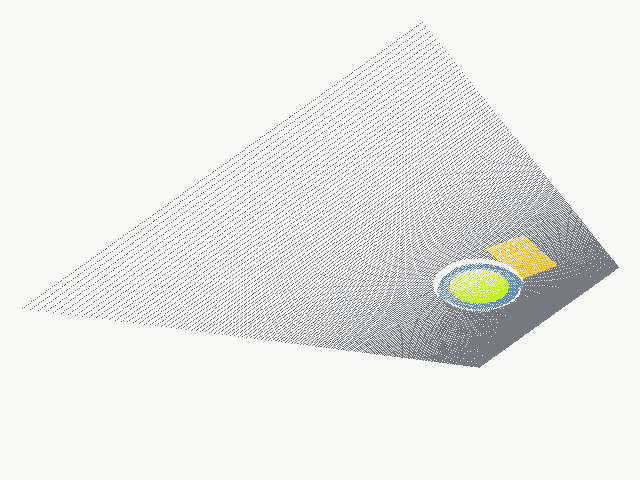
World-space geometry projection Scene: scene-69be95f0444d9e14472ecd29
Card absent Original RGB 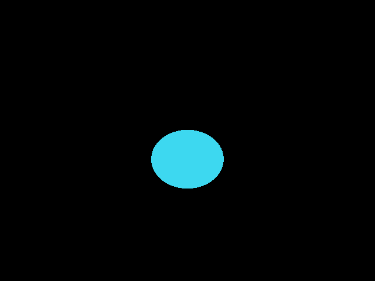
Food-class mask Component IDs Object IDs Metric depth, 0.15–1.20 m 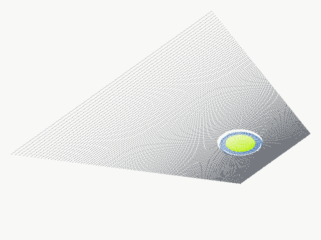
World-space geometry projection Scene: scene-40176edc5cd886ed9d6b56b6
Matched-pair checks PASS scene config equal except anchor cardPASS camera identicalPASS lighting identicalPASS background vessel noise identicalPASS food masks geometry mass volume density identicalPASS metric depth identical outside cardPASS world geometry identical outside cardPASS rgb differences confined to card edge tolerancePASS ID7 60mm only presentPhysical labels and density provenance component 1 — aloo-capsicum : 74.00 g · 78.97 ml · 0.937 g/ml; data/wed_dishes.yaml#off_menu.aloo-capsicum; [0.72, 1.08] (project-assumed uncertainty interval around configured class prior) Marker geometry label Marker label: DICT_4X4_50 id 7, 60.0 mm; tilt=40.0°; cm/px=0.124790; corners=[[430.4721005444753, 241.36310880618248], [482.0092101511066, 253.38473162581084], [478.34485115143013, 294.99669980991996], [422.7918340998683, 280.9543858153617]]
Human review: REVIEW_REQUIRED . Enter decisions in review_sheet.csv.
isolated_dish aloo-curry aloo-curry
pair-b7be83e9aaa81e6f51d55f0dAutomated pair: PASS Card present — ID 7 / 60 mm Original RGB Food-class mask Component IDs Object IDs Metric depth, 0.15–1.20 m 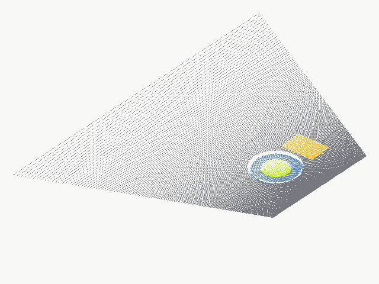
World-space geometry projection Scene: scene-74d07b1f83c5dea15102beca
Card absent Scene: scene-f5f6e0c82092ccb1eb34a471
Matched-pair checks PASS scene config equal except anchor cardPASS camera identicalPASS lighting identicalPASS background vessel noise identicalPASS food masks geometry mass volume density identicalPASS metric depth identical outside cardPASS world geometry identical outside cardPASS rgb differences confined to card edge tolerancePASS ID7 60mm only presentPhysical labels and density provenance component 1 — aloo-curry : 126.00 g · 123.83 ml · 1.018 g/ml; data/wed_dishes.yaml#off_menu.aloo-curry; [0.76, 1.14] (project-assumed uncertainty interval around configured class prior) Marker geometry label Marker label: DICT_4X4_50 id 7, 60.0 mm; tilt=37.9°; cm/px=0.125839; corners=[[426.0348441397339, 240.1253220058929], [475.07232943965744, 237.75231413665958], [490.5903810206987, 279.7210225792118], [437.7282459253093, 282.48547562808386]]
Human review: REVIEW_REQUIRED . Enter decisions in review_sheet.csv.
isolated_dish aloo-fry aloo-fry
pair-537f32b3f0b5d49794230752Automated pair: PASS Card present — ID 7 / 60 mm Original RGB Food-class mask Component IDs Object IDs 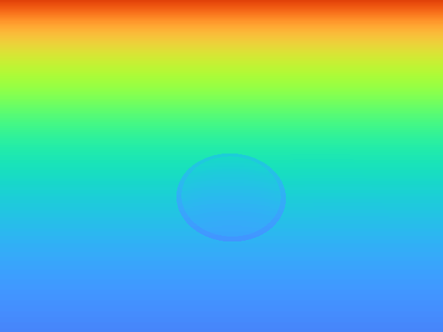
Metric depth, 0.15–1.20 m 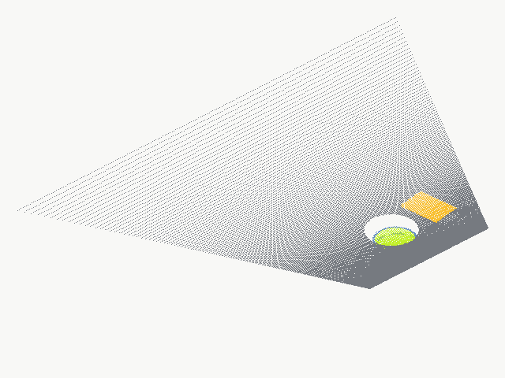
World-space geometry projection Scene: scene-6bf8feb79364cbb07e223ca0
Card absent Original RGB Food-class mask Component IDs Object IDs Metric depth, 0.15–1.20 m 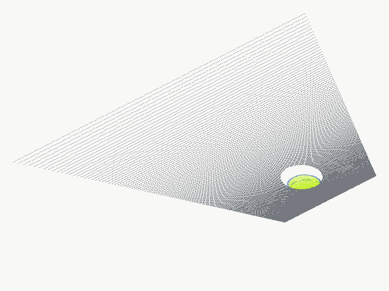
World-space geometry projection Scene: scene-896eeaf1ee2ba75d220d5658
Matched-pair checks PASS scene config equal except anchor cardPASS camera identicalPASS lighting identicalPASS background vessel noise identicalPASS food masks geometry mass volume density identicalPASS metric depth identical outside cardPASS world geometry identical outside cardPASS rgb differences confined to card edge tolerancePASS ID7 60mm only presentPhysical labels and density provenance component 1 — aloo-fry : 45.00 g · 44.95 ml · 1.001 g/ml; data/wed_dishes.yaml#off_menu.aloo-fry; [0.72, 1.08] (project-assumed uncertainty interval around configured class prior) Marker geometry label Marker label: DICT_4X4_50 id 7, 60.0 mm; tilt=42.2°; cm/px=0.124980; corners=[[447.0855397165229, 241.20413075614462], [494.8170355238827, 234.93738063877794], [519.2173196122715, 274.32272577626713], [467.63401916437186, 281.7375549675594]]
Human review: REVIEW_REQUIRED . Enter decisions in review_sheet.csv.
isolated_dish beans-curry beans-curry
pair-70b248862197ba74313e4c1bAutomated pair: PASS Card present — ID 7 / 60 mm Original RGB 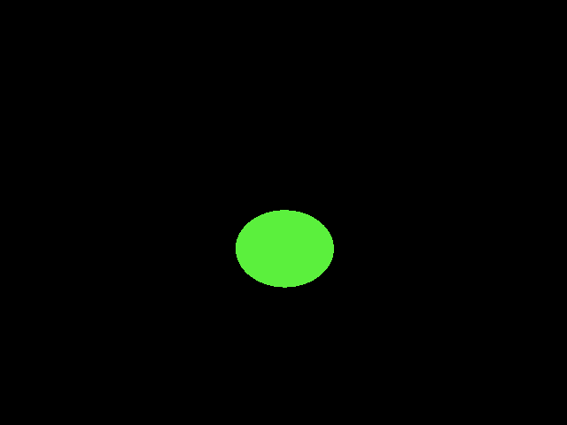
Food-class mask Component IDs Object IDs 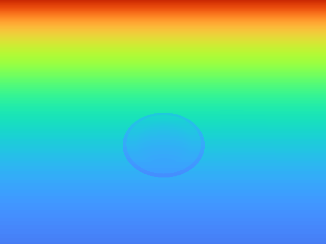
Metric depth, 0.15–1.20 m 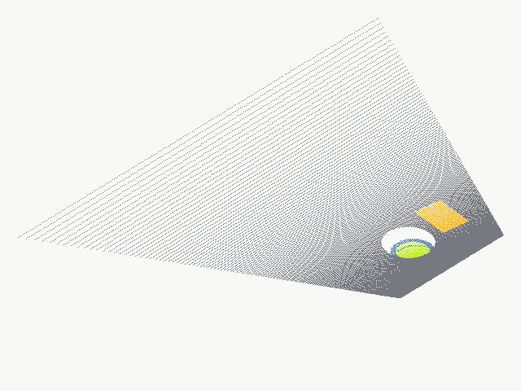
World-space geometry projection Scene: scene-ff575c6160fdd5378b5e9221
Card absent Original RGB Food-class mask Component IDs Object IDs 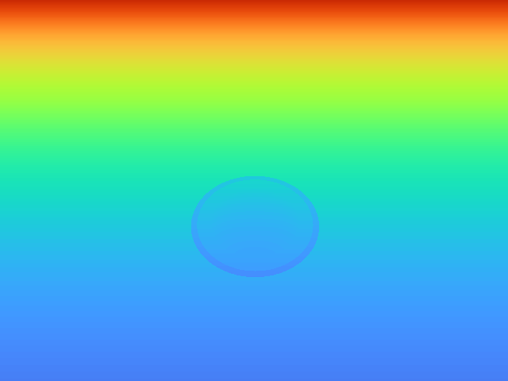
Metric depth, 0.15–1.20 m 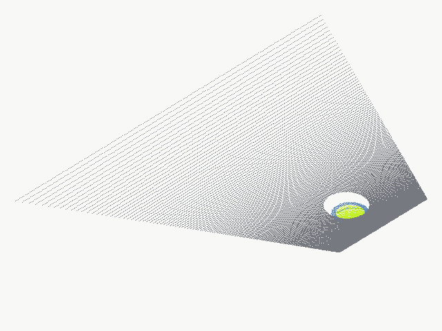
World-space geometry projection Scene: scene-0a8e56132ecc2fdbba35a44a
Matched-pair checks PASS scene config equal except anchor cardPASS camera identicalPASS lighting identicalPASS background vessel noise identicalPASS food masks geometry mass volume density identicalPASS metric depth identical outside cardPASS world geometry identical outside cardPASS rgb differences confined to card edge tolerancePASS ID7 60mm only presentPhysical labels and density provenance component 1 — beans-curry : 57.00 g · 56.27 ml · 1.013 g/ml; data/wed_dishes.yaml#off_menu.beans-curry; [0.76, 1.14] (project-assumed uncertainty interval around configured class prior) Marker geometry label Marker label: DICT_4X4_50 id 7, 60.0 mm; tilt=43.8°; cm/px=0.125651; corners=[[451.0216243493112, 233.68726867656304], [503.57244073733045, 238.8875575791469], [512.6377660143083, 278.9624473653537], [455.1483572611338, 272.7576781055776]]
Human review: REVIEW_REQUIRED . Enter decisions in review_sheet.csv.
isolated_dish beetroot-kobari beetroot-kobari
pair-983ad9d792da261572cd2268Automated pair: PASS Card present — ID 7 / 60 mm Original RGB Food-class mask Component IDs Object IDs Metric depth, 0.15–1.20 m 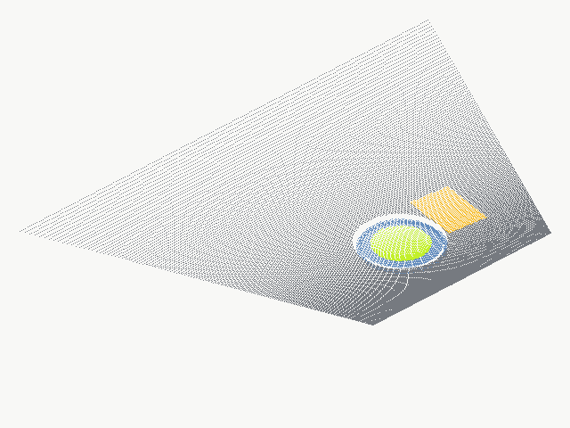
World-space geometry projection Scene: scene-e0ab8a8478b7409f6ea57c82
Card absent Scene: scene-1cdf1354f287226ebc15afe9
Matched-pair checks PASS scene config equal except anchor cardPASS camera identicalPASS lighting identicalPASS background vessel noise identicalPASS food masks geometry mass volume density identicalPASS metric depth identical outside cardPASS world geometry identical outside cardPASS rgb differences confined to card edge tolerancePASS ID7 60mm only presentPhysical labels and density provenance component 1 — beetroot-kobari : 73.00 g · 78.36 ml · 0.932 g/ml; data/wed_dishes.yaml#off_menu.beetroot-kobari; [0.72, 1.08] (project-assumed uncertainty interval around configured class prior) Marker geometry label Marker label: DICT_4X4_50 id 7, 60.0 mm; tilt=34.3°; cm/px=0.122737; corners=[[429.31789299147476, 223.8524357200109], [480.86044563000553, 227.90650240358121], [487.3721165917302, 272.0662155515231], [431.98769418764874, 267.39094481962474]]
Human review: REVIEW_REQUIRED . Enter decisions in review_sheet.csv.
isolated_dish beetroot-poriyal beetroot-poriyal
pair-5f76318d50c6a564d116edeeAutomated pair: PASS Card present — ID 7 / 60 mm Original RGB Food-class mask Component IDs Object IDs Metric depth, 0.15–1.20 m 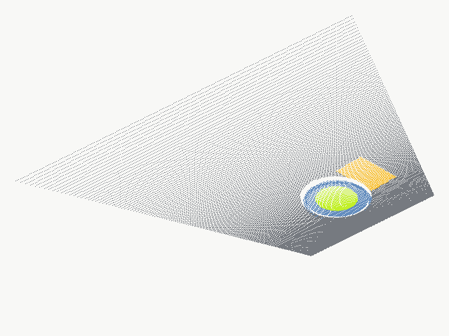
World-space geometry projection Scene: scene-ddd45ea0ba61e5e58d23b263
Matched-pair checks PASS scene config equal except anchor cardPASS camera identicalPASS lighting identicalPASS background vessel noise identicalPASS food masks geometry mass volume density identicalPASS metric depth identical outside cardPASS world geometry identical outside cardPASS rgb differences confined to card edge tolerancePASS ID7 60mm only presentPhysical labels and density provenance component 1 — beetroot-poriyal : 49.00 g · 62.32 ml · 0.786 g/ml; data/wed_dishes.yaml#off_menu.beetroot-poriyal; [0.72, 1.08] (project-assumed uncertainty interval around configured class prior) Marker geometry label Marker label: DICT_4X4_50 id 7, 60.0 mm; tilt=38.9°; cm/px=0.119004; corners=[[430.7843405465048, 223.64861865468612], [482.83156230970087, 220.27157075598626], [501.83932287741607, 263.22412662153255], [445.3806996139578, 267.2154167736842]]
Human review: REVIEW_REQUIRED . Enter decisions in review_sheet.csv.
isolated_dish bisi-bele-bath bisi-bele-bath
pair-346eafc83ba1cd4605e8f306Automated pair: PASS Card present — ID 7 / 60 mm Original RGB Food-class mask Component IDs Object IDs Metric depth, 0.15–1.20 m 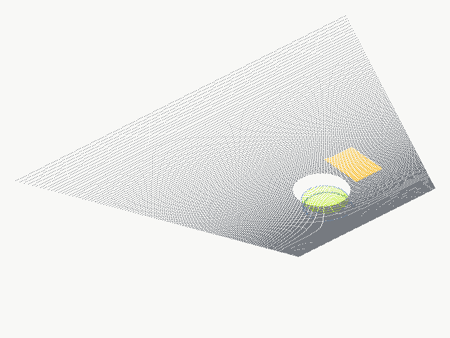
World-space geometry projection Scene: scene-dcade2f80b13cac64d29e7dd
Card absent Original RGB Food-class mask Component IDs Object IDs 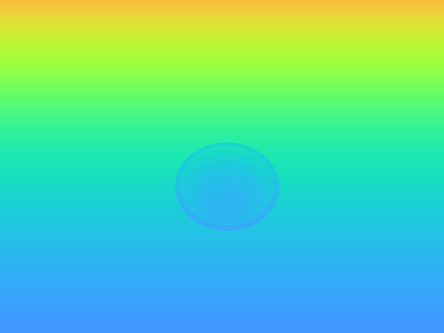
Metric depth, 0.15–1.20 m 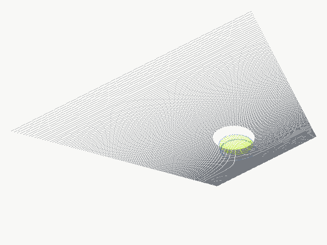
World-space geometry projection Scene: scene-47c612c41ab9c2b53053301f
Matched-pair checks PASS scene config equal except anchor cardPASS camera identicalPASS lighting identicalPASS background vessel noise identicalPASS food masks geometry mass volume density identicalPASS metric depth identical outside cardPASS world geometry identical outside cardPASS rgb differences confined to card edge tolerancePASS ID7 60mm only presentPhysical labels and density provenance component 1 — bisi-bele-bath : 178.00 g · 217.68 ml · 0.818 g/ml; data/menu.yaml#dishes.bisibelebath.components; [0.72, 1.08] (project-assumed uncertainty interval around configured class prior) Marker geometry label Marker label: DICT_4X4_50 id 7, 60.0 mm; tilt=35.8°; cm/px=0.133438; corners=[[430.4581446206537, 209.19213322641892], [478.3916922764815, 210.07516036343586], [488.5834662366054, 249.4586806358331], [437.1808811932677, 248.44379556654528]]
Human review: REVIEW_REQUIRED . Enter decisions in review_sheet.csv.
isolated_dish boondi boondi
pair-7be304c2668ac89247f028b7Automated pair: PASS Card present — ID 7 / 60 mm Original RGB Food-class mask Component IDs Object IDs 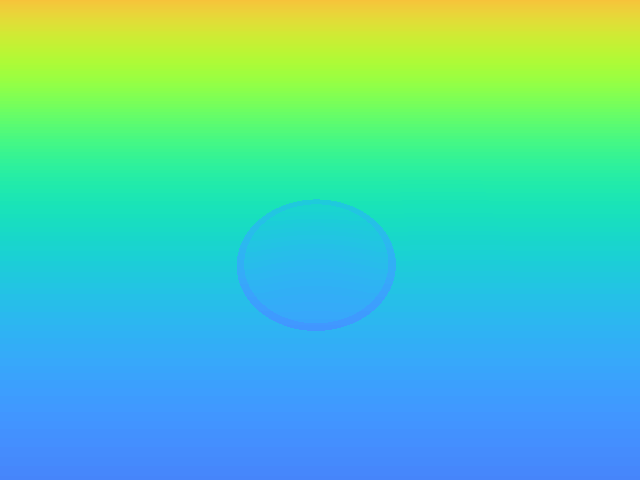
Metric depth, 0.15–1.20 m 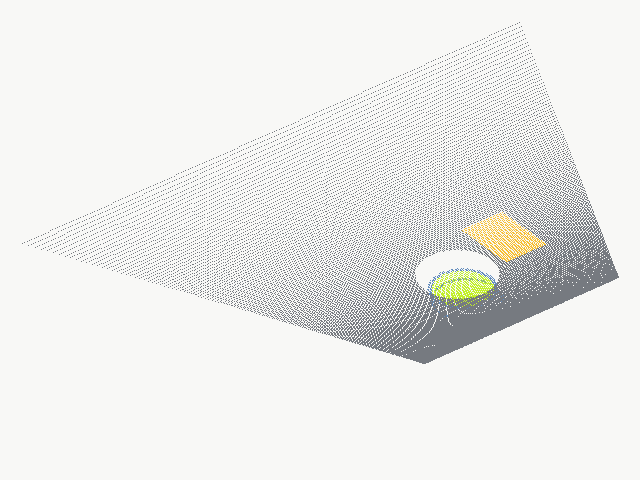
World-space geometry projection Scene: scene-0a4a328e0538d4431b45c629
Card absent Original RGB Food-class mask Component IDs Object IDs 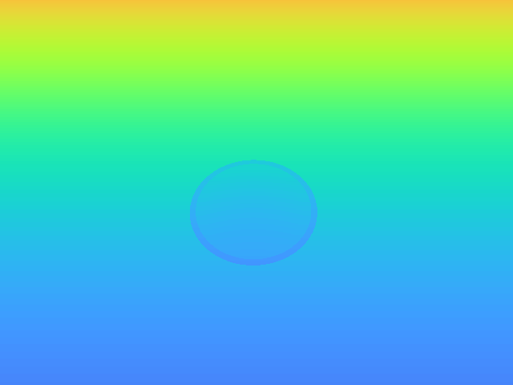
Metric depth, 0.15–1.20 m 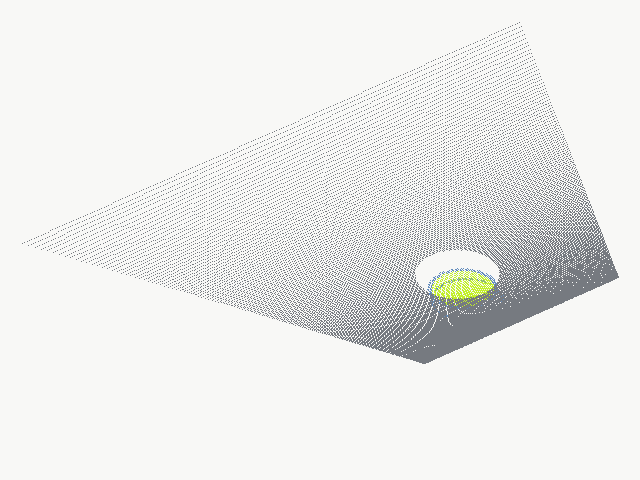
World-space geometry projection Scene: scene-17e93af119be167f7a19901f
Matched-pair checks PASS scene config equal except anchor cardPASS camera identicalPASS lighting identicalPASS background vessel noise identicalPASS food masks geometry mass volume density identicalPASS metric depth identical outside cardPASS world geometry identical outside cardPASS rgb differences confined to card edge tolerancePASS ID7 60mm only presentPhysical labels and density provenance component 1 — boondi : 14.00 g · 39.62 ml · 0.353 g/ml; data/wed_dishes.yaml#off_menu.boondi; [0.32, 0.48000000000000004] (project-assumed uncertainty interval around configured class prior) Marker geometry label Marker label: DICT_4X4_50 id 7, 60.0 mm; tilt=37.3°; cm/px=0.130920; corners=[[419.52582133097934, 197.80274384394144], [468.7747192704515, 197.1747445727248], [481.26043436795317, 236.1713927406214], [428.19539581382355, 236.90087795069093]]
Human review: REVIEW_REQUIRED . Enter decisions in review_sheet.csv.
isolated_dish cabbage-dry cabbage-dry
pair-9a2754f0d8d6ee65cbe02fb8Automated pair: PASS Card present — ID 7 / 60 mm Original RGB Food-class mask Component IDs Object IDs Metric depth, 0.15–1.20 m 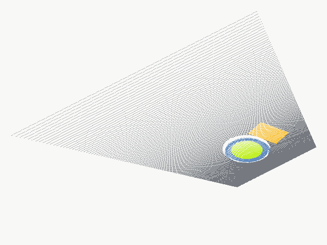
World-space geometry projection Scene: scene-bc8eecfcab74382a2aef0a78
Card absent Original RGB Food-class mask Component IDs Object IDs Metric depth, 0.15–1.20 m 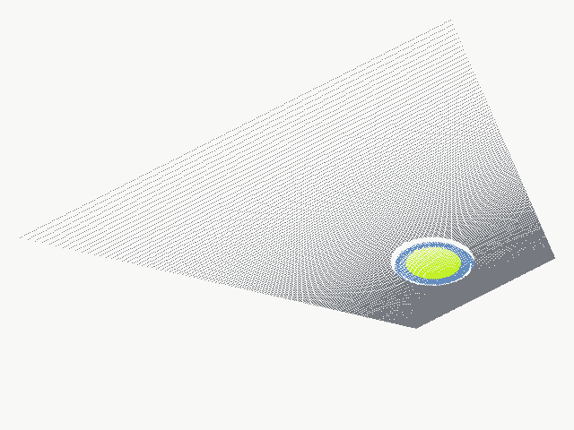
World-space geometry projection Scene: scene-4a3d5212e98681fc762cfea1
Matched-pair checks PASS scene config equal except anchor cardPASS camera identicalPASS lighting identicalPASS background vessel noise identicalPASS food masks geometry mass volume density identicalPASS metric depth identical outside cardPASS world geometry identical outside cardPASS rgb differences confined to card edge tolerancePASS ID7 60mm only presentPhysical labels and density provenance component 1 — cabbage-dry : 61.00 g · 63.27 ml · 0.964 g/ml; data/wed_dishes.yaml#off_menu.cabbage-dry; [0.72, 1.08] (project-assumed uncertainty interval around configured class prior) Marker geometry label Marker label: DICT_4X4_50 id 7, 60.0 mm; tilt=41.6°; cm/px=0.121726; corners=[[413.8437428605682, 227.2221682444271], [461.7656878354985, 216.75151996819957], [489.7929703375501, 255.41679074458258], [438.3050693919514, 267.8190635519406]]
Human review: REVIEW_REQUIRED . Enter decisions in review_sheet.csv.
isolated_dish channa-brinjal channa-brinjal
pair-298fa7015cf478ac163f5cb2Automated pair: PASS Card present — ID 7 / 60 mm Original RGB 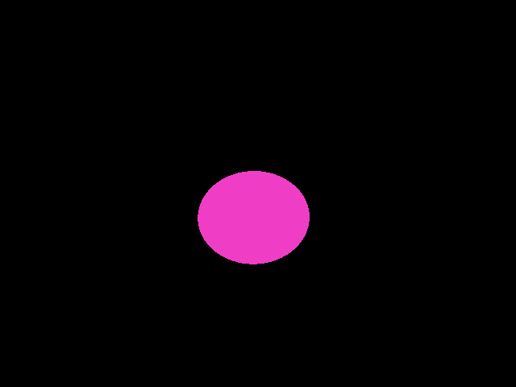
Food-class mask Component IDs Object IDs 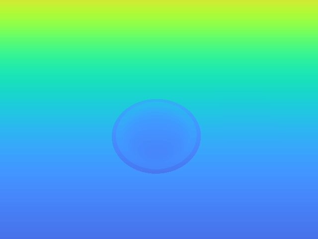
Metric depth, 0.15–1.20 m 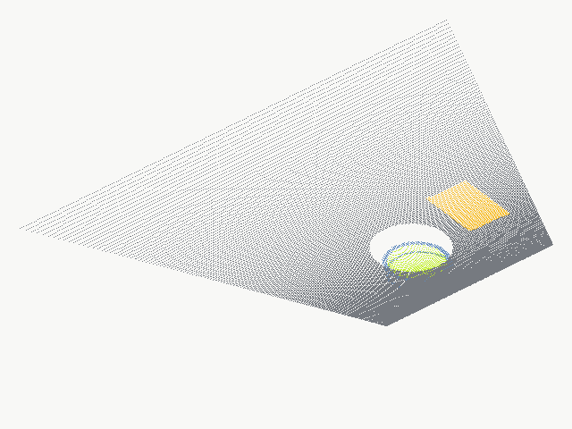
World-space geometry projection Scene: scene-6bb898755310dfc90a93b6d7
Card absent Original RGB Food-class mask 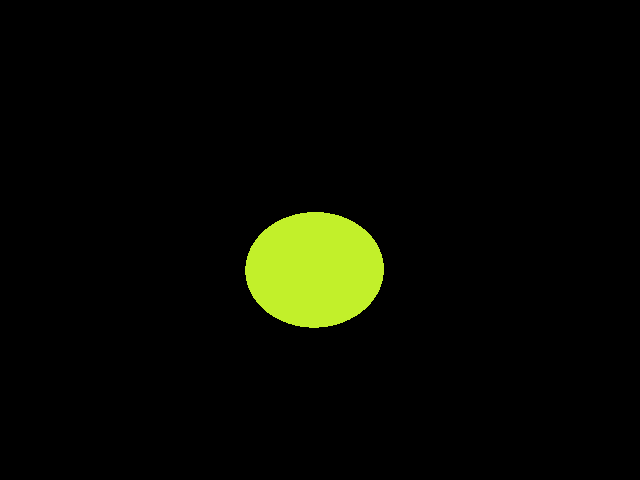
Component IDs Object IDs 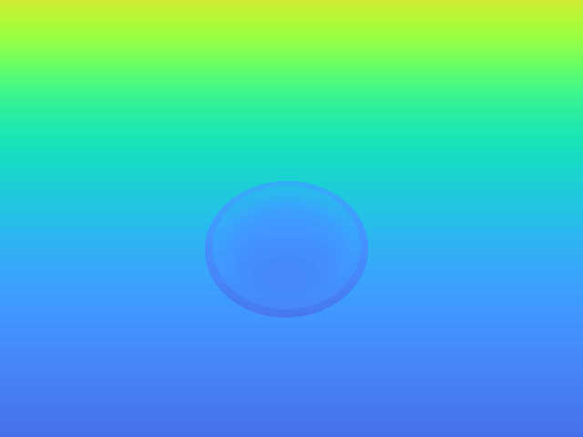
Metric depth, 0.15–1.20 m 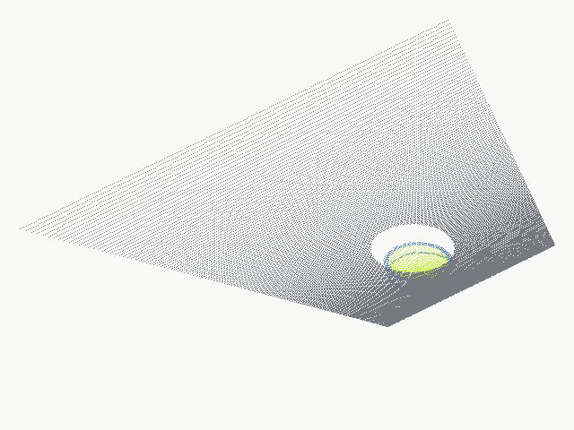
World-space geometry projection Scene: scene-1400a67a3cba5ab2e9ea0a00
Matched-pair checks PASS scene config equal except anchor cardPASS camera identicalPASS lighting identicalPASS background vessel noise identicalPASS food masks geometry mass volume density identicalPASS metric depth identical outside cardPASS world geometry identical outside cardPASS rgb differences confined to card edge tolerancePASS ID7 60mm only presentPhysical labels and density provenance component 1 — channa-brinjal : 158.00 g · 195.23 ml · 0.809 g/ml; data/wed_dishes.yaml#off_menu.channa-brinjal; [0.76, 1.14] (project-assumed uncertainty interval around configured class prior) Marker geometry label Marker label: DICT_4X4_50 id 7, 60.0 mm; tilt=37.3°; cm/px=0.113995; corners=[[460.6993251486035, 202.62437008761427], [516.8561800552707, 204.41851535967135], [531.6504073781066, 249.4441986816626], [470.48317274983043, 247.31890773634555]]
Human review: REVIEW_REQUIRED . Enter decisions in review_sheet.csv.
isolated_dish chicken-dum-biryani chicken-dum-biryani
pair-6d7abf05138d449a0eee1eebAutomated pair: PASS Card present — ID 7 / 60 mm Original RGB Food-class mask Component IDs Object IDs 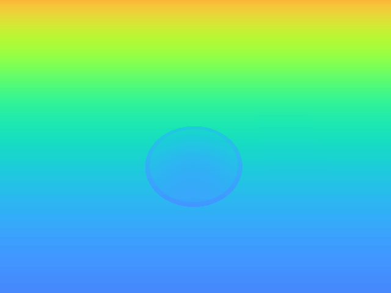
Metric depth, 0.15–1.20 m World-space geometry projection Scene: scene-ce2e5b1eaac63e7d2798e85e
Card absent Original RGB Food-class mask Component IDs Object IDs 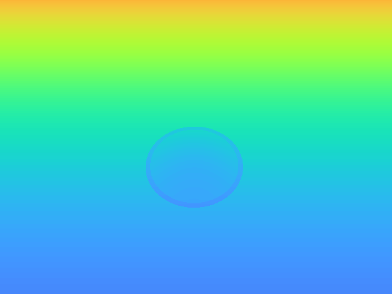
Metric depth, 0.15–1.20 m World-space geometry projection Scene: scene-ef7a491e990cb7775cce8129
Matched-pair checks PASS scene config equal except anchor cardPASS camera identicalPASS lighting identicalPASS background vessel noise identicalPASS food masks geometry mass volume density identicalPASS metric depth identical outside cardPASS world geometry identical outside cardPASS rgb differences confined to card edge tolerancePASS ID7 60mm only presentPhysical labels and density provenance component 1 — chicken-dum-biryani : 109.00 g · 128.27 ml · 0.850 g/ml; data/wed_dishes.yaml#off_menu.chicken-dum-biryani; [0.6799999999999999, 1.02] (project-assumed uncertainty interval around configured class prior) Marker geometry label Marker label: DICT_4X4_50 id 7, 60.0 mm; tilt=37.8°; cm/px=0.130988; corners=[[440.8980906279678, 202.33407385473149], [490.0320132212962, 202.39124828500775], [503.24765653186637, 241.30354058260585], [450.26941719933154, 241.23707281886166]]
Human review: REVIEW_REQUIRED . Enter decisions in review_sheet.csv.
isolated_dish chutney chutney
pair-1073dc7c5af6d58b58d6597bAutomated pair: PASS Card present — ID 7 / 60 mm Original RGB Food-class mask Component IDs Object IDs Metric depth, 0.15–1.20 m 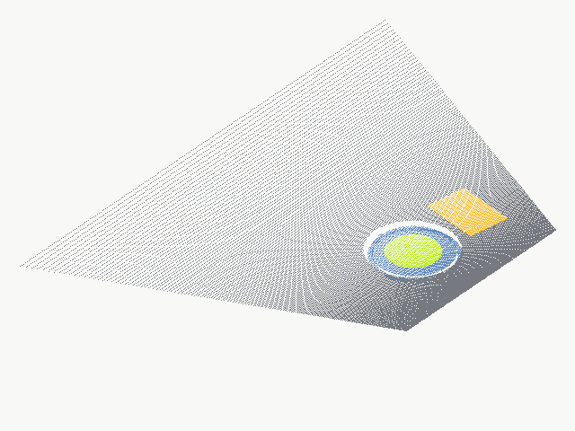
World-space geometry projection Scene: scene-46246c8dfd35f9c2a937b9d2
Card absent Scene: scene-b747b3c3e499e7ffc6d2940f
Matched-pair checks PASS scene config equal except anchor cardPASS camera identicalPASS lighting identicalPASS background vessel noise identicalPASS food masks geometry mass volume density identicalPASS metric depth identical outside cardPASS world geometry identical outside cardPASS rgb differences confined to card edge tolerancePASS ID7 60mm only presentPhysical labels and density provenance component 1 — chutney : 15.00 g · 15.37 ml · 0.976 g/ml; data/wed_dishes.yaml#off_menu.chutney; [0.8, 1.2] (project-assumed uncertainty interval around configured class prior) Marker geometry label Marker label: DICT_4X4_50 id 7, 60.0 mm; tilt=36.1°; cm/px=0.112450; corners=[[457.05551336771566, 235.69986630679293], [513.3118814642156, 243.06571443183068], [519.5562153398204, 291.0353700231587], [458.56507894081506, 282.39283339747294]]
Human review: REVIEW_REQUIRED . Enter decisions in review_sheet.csv.
isolated_dish curd curd
pair-265a55f82092852426f37d2dAutomated pair: PASS Card present — ID 7 / 60 mm Original RGB Food-class mask Component IDs Object IDs 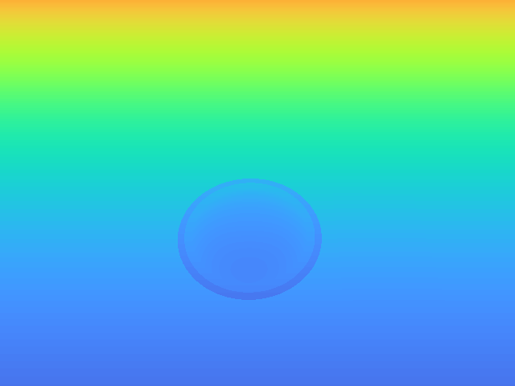
Metric depth, 0.15–1.20 m 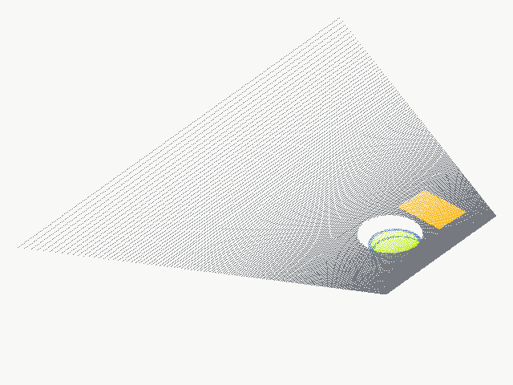
World-space geometry projection Scene: scene-593765e8566213622b583ba5
Card absent Original RGB 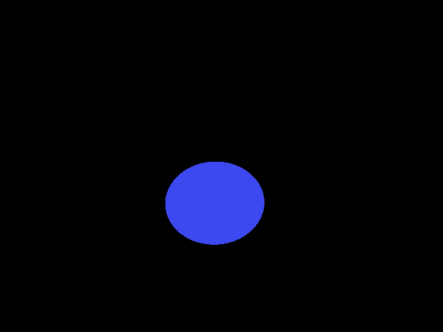
Food-class mask Component IDs Object IDs 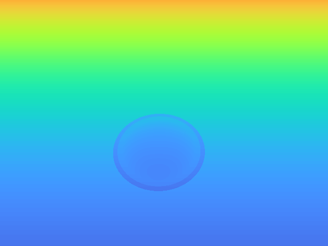
Metric depth, 0.15–1.20 m 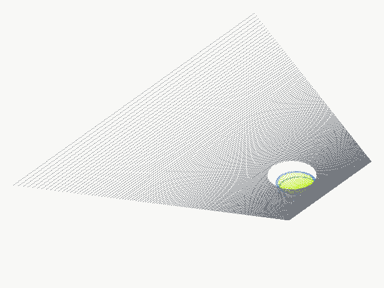
World-space geometry projection Scene: scene-9250b4bed42ce786caaecf24
Matched-pair checks PASS scene config equal except anchor cardPASS camera identicalPASS lighting identicalPASS background vessel noise identicalPASS food masks geometry mass volume density identicalPASS metric depth identical outside cardPASS world geometry identical outside cardPASS rgb differences confined to card edge tolerancePASS ID7 60mm only presentPhysical labels and density provenance component 1 — curd : 164.00 g · 188.32 ml · 0.871 g/ml; data/wed_dishes.yaml#off_menu.curd; [0.8240000000000001, 1.236] (project-assumed uncertainty interval around configured class prior) Marker geometry label Marker label: DICT_4X4_50 id 7, 60.0 mm; tilt=40.4°; cm/px=0.101926; corners=[[437.8372284641574, 264.9988609036091], [498.3815021287543, 268.2607345852817], [512.2734850093746, 321.38484004979375], [445.43486455526374, 317.4184200819869]]
Human review: REVIEW_REQUIRED . Enter decisions in review_sheet.csv.
isolated_dish dondakaya-fry dondakaya-fry
pair-a0840e031c998b9ec2761c1aAutomated pair: PASS Card present — ID 7 / 60 mm Scene: scene-ed6beae66d1f8be11c08199a
Card absent Original RGB Food-class mask Component IDs Object IDs Metric depth, 0.15–1.20 m 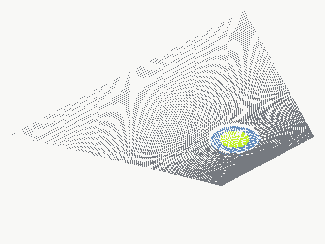
World-space geometry projection Scene: scene-d8037e321b4f74d15bfb8510
Matched-pair checks PASS scene config equal except anchor cardPASS camera identicalPASS lighting identicalPASS background vessel noise identicalPASS food masks geometry mass volume density identicalPASS metric depth identical outside cardPASS world geometry identical outside cardPASS rgb differences confined to card edge tolerancePASS ID7 60mm only presentPhysical labels and density provenance component 1 — dondakaya-fry : 29.00 g · 39.00 ml · 0.744 g/ml; data/wed_dishes.yaml#off_menu.dondakaya-fry; [0.72, 1.08] (project-assumed uncertainty interval around configured class prior) Marker geometry label Marker label: DICT_4X4_50 id 7, 60.0 mm; tilt=36.8°; cm/px=0.124443; corners=[[429.7049463449157, 226.1404949146729], [475.4538807358788, 214.9824567871347], [502.4060874964071, 254.41387450909647], [453.7813055176406, 267.317728935201]]
Human review: REVIEW_REQUIRED . Enter decisions in review_sheet.csv.
isolated_dish kakarakaya-fry kakarakaya-fry
pair-2fbf5119347bcb8ff964d80dAutomated pair: PASS Card present — ID 7 / 60 mm Original RGB Food-class mask Component IDs Object IDs 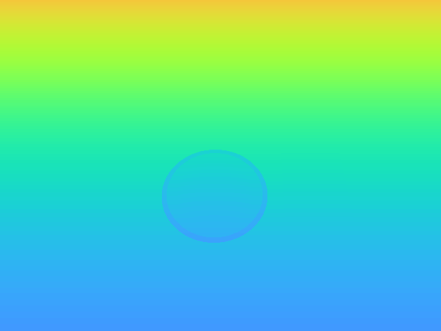
Metric depth, 0.15–1.20 m 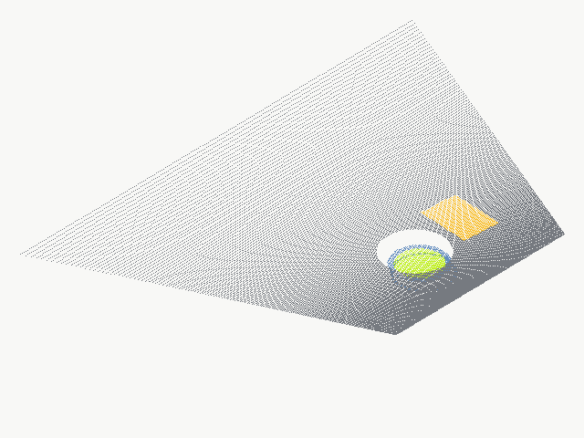
World-space geometry projection Scene: scene-9358c503171ce9f42d928292
Card absent Original RGB 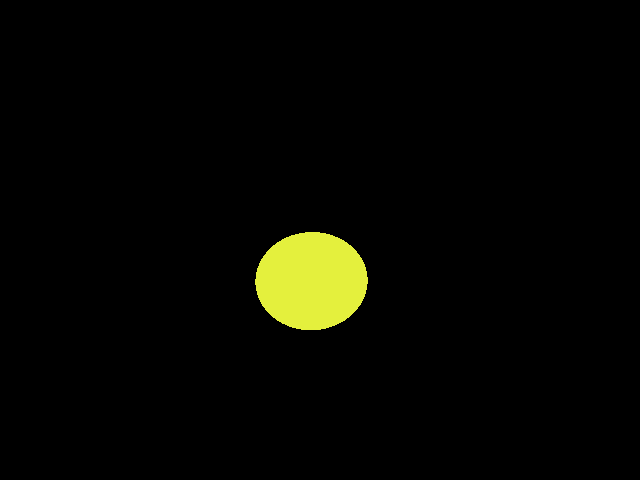
Food-class mask Component IDs Object IDs 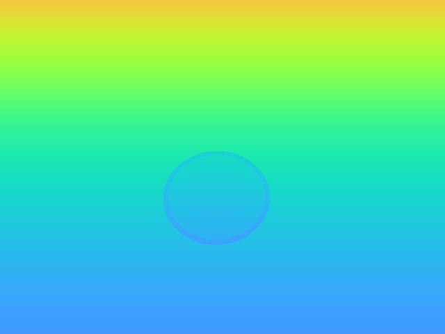
Metric depth, 0.15–1.20 m 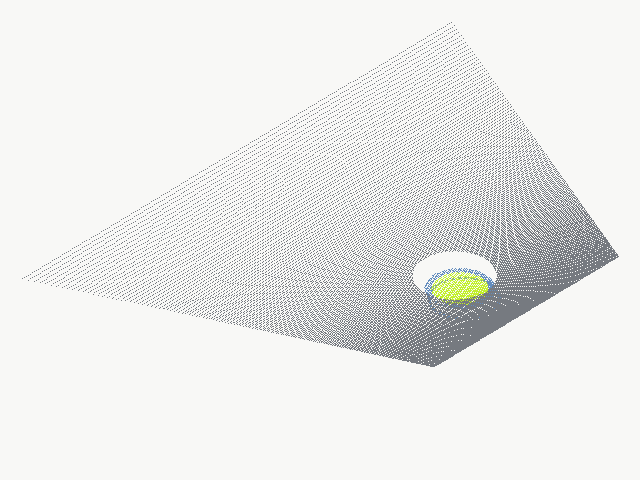
World-space geometry projection Scene: scene-ef2d0fe2a707347cb7c2aa72
Matched-pair checks PASS scene config equal except anchor cardPASS camera identicalPASS lighting identicalPASS background vessel noise identicalPASS food masks geometry mass volume density identicalPASS metric depth identical outside cardPASS world geometry identical outside cardPASS rgb differences confined to card edge tolerancePASS ID7 60mm only presentPhysical labels and density provenance component 1 — kakarakaya-fry : 21.00 g · 23.92 ml · 0.878 g/ml; data/wed_dishes.yaml#off_menu.kakarakaya-fry; [0.72, 1.08] (project-assumed uncertainty interval around configured class prior) Marker geometry label Marker label: DICT_4X4_50 id 7, 60.0 mm; tilt=34.7°; cm/px=0.124638; corners=[[426.7630494946313, 232.75051535961165], [477.16685385845705, 235.6370003522187], [484.8963658317303, 279.34576604476604], [430.76941960282977, 276.02086621945097]]
Human review: REVIEW_REQUIRED . Enter decisions in review_sheet.csv.
isolated_dish kofta-curry kofta-curry
pair-6182e8a6294b63691a69c6ecAutomated pair: PASS Card present — ID 7 / 60 mm Original RGB Food-class mask Component IDs Object IDs Metric depth, 0.15–1.20 m World-space geometry projection Scene: scene-00c173b73c31f8e4538ce456
Matched-pair checks PASS scene config equal except anchor cardPASS camera identicalPASS lighting identicalPASS background vessel noise identicalPASS food masks geometry mass volume density identicalPASS metric depth identical outside cardPASS world geometry identical outside cardPASS rgb differences confined to card edge tolerancePASS ID7 60mm only presentPhysical labels and density provenance component 1 — kofta-curry : 100.00 g · 89.64 ml · 1.116 g/ml; data/wed_dishes.yaml#off_menu.kofta-curry; [0.76, 1.14] (project-assumed uncertainty interval around configured class prior) Marker geometry label Marker label: DICT_4X4_50 id 7, 60.0 mm; tilt=39.9°; cm/px=0.132244; corners=[[436.3162067856832, 234.49287834932966], [484.89545411425956, 236.91274714751196], [494.6759415493252, 276.4301529312753], [442.1685607378089, 273.6075910105949]]
Human review: REVIEW_REQUIRED . Enter decisions in review_sheet.csv.
isolated_dish leaf-dal leaf-dal
pair-a8f8f4e947cdcdb9ae2058a8Automated pair: PASS Matched-pair checks PASS scene config equal except anchor cardPASS camera identicalPASS lighting identicalPASS background vessel noise identicalPASS food masks geometry mass volume density identicalPASS metric depth identical outside cardPASS world geometry identical outside cardPASS rgb differences confined to card edge tolerancePASS ID7 60mm only presentPhysical labels and density provenance component 1 — leaf-dal : 68.00 g · 82.19 ml · 0.827 g/ml; data/wed_dishes.yaml#off_menu.leaf-dal; [0.8, 1.2] (project-assumed uncertainty interval around configured class prior) Marker geometry label Marker label: DICT_4X4_50 id 7, 60.0 mm; tilt=34.6°; cm/px=0.126339; corners=[[435.54947052039665, 212.9703711820174], [485.00969097676557, 211.60786877778693], [498.9207830363895, 253.463001787308], [445.874537497172, 255.03206367876686]]
Human review: REVIEW_REQUIRED . Enter decisions in review_sheet.csv.
isolated_dish mango-pickle mango-pickle
pair-17a06a930a68cf5403a145faAutomated pair: PASS Matched-pair checks PASS scene config equal except anchor cardPASS camera identicalPASS lighting identicalPASS background vessel noise identicalPASS food masks geometry mass volume density identicalPASS metric depth identical outside cardPASS world geometry identical outside cardPASS rgb differences confined to card edge tolerancePASS ID7 60mm only presentPhysical labels and density provenance component 1 — mango-pickle : 20.00 g · 17.97 ml · 1.113 g/ml; data/wed_dishes.yaml#off_menu.mango-pickle; [0.8, 1.2] (project-assumed uncertainty interval around configured class prior) Marker geometry label Marker label: DICT_4X4_50 id 7, 60.0 mm; tilt=38.2°; cm/px=0.109285; corners=[[467.24883986532427, 229.29975217277584], [522.7038488308191, 226.0779993556955], [545.8841454675918, 273.14727819163716], [485.4622363124298, 276.9899510304673]]
Human review: REVIEW_REQUIRED . Enter decisions in review_sheet.csv.
isolated_dish masoor-dal masoor-dal
pair-24686b52b328f469c593a1abAutomated pair: PASS Matched-pair checks PASS scene config equal except anchor cardPASS camera identicalPASS lighting identicalPASS background vessel noise identicalPASS food masks geometry mass volume density identicalPASS metric depth identical outside cardPASS world geometry identical outside cardPASS rgb differences confined to card edge tolerancePASS ID7 60mm only presentPhysical labels and density provenance component 1 — masoor-dal : 123.00 g · 103.56 ml · 1.188 g/ml; data/wed_dishes.yaml#off_menu.masoor-dal; [0.8, 1.2] (project-assumed uncertainty interval around configured class prior) Marker geometry label Marker label: DICT_4X4_50 id 7, 60.0 mm; tilt=43.0°; cm/px=0.118296; corners=[[437.81502102474576, 227.47761712121977], [493.8643233041938, 236.30858458415568], [497.0483640480563, 279.01277311473814], [435.63288610268387, 268.4135083532077]]
Human review: REVIEW_REQUIRED . Enter decisions in review_sheet.csv.
isolated_dish mirchi-ka-salan mirchi-ka-salan
pair-137cd9693c742ff21d8028d8Automated pair: PASS Matched-pair checks PASS scene config equal except anchor cardPASS camera identicalPASS lighting identicalPASS background vessel noise identicalPASS food masks geometry mass volume density identicalPASS metric depth identical outside cardPASS world geometry identical outside cardPASS rgb differences confined to card edge tolerancePASS ID7 60mm only presentPhysical labels and density provenance component 1 — mirchi-ka-salan : 127.00 g · 163.96 ml · 0.775 g/ml; data/wed_dishes.yaml#off_menu.mirchi-ka-salan; [0.76, 1.14] (project-assumed uncertainty interval around configured class prior) Marker geometry label Marker label: DICT_4X4_50 id 7, 60.0 mm; tilt=40.0°; cm/px=0.120881; corners=[[440.15862730955246, 204.20781550874966], [495.2071729797939, 211.5937159185039], [499.5952168392534, 253.35574528531623], [439.6163759217278, 244.59728397667317]]
Human review: REVIEW_REQUIRED . Enter decisions in review_sheet.csv.
isolated_dish muddha-pappu muddha-pappu
pair-2b579d05f806d8a42170e285Automated pair: PASS Card present — ID 7 / 60 mm Original RGB Food-class mask Component IDs Object IDs Metric depth, 0.15–1.20 m World-space geometry projection Scene: scene-5402dc12b515126367567055
Matched-pair checks PASS scene config equal except anchor cardPASS camera identicalPASS lighting identicalPASS background vessel noise identicalPASS food masks geometry mass volume density identicalPASS metric depth identical outside cardPASS world geometry identical outside cardPASS rgb differences confined to card edge tolerancePASS ID7 60mm only presentPhysical labels and density provenance component 1 — muddha-pappu : 102.00 g · 115.59 ml · 0.882 g/ml; data/wed_dishes.yaml#off_menu.muddha-pappu; [0.8, 1.2] (project-assumed uncertainty interval around configured class prior) Marker geometry label Marker label: DICT_4X4_50 id 7, 60.0 mm; tilt=43.1°; cm/px=0.133666; corners=[[424.85749687112013, 219.99939323768717], [472.2566152885512, 216.4846433462135], [490.8623550136032, 252.77035273029108], [439.5061544872687, 256.9206592233071]]
Human review: REVIEW_REQUIRED . Enter decisions in review_sheet.csv.
isolated_dish non-spicy-curry non-spicy-curry
pair-02ab9189614e3cd684d0eed8Automated pair: PASS Matched-pair checks PASS scene config equal except anchor cardPASS camera identicalPASS lighting identicalPASS background vessel noise identicalPASS food masks geometry mass volume density identicalPASS metric depth identical outside cardPASS world geometry identical outside cardPASS rgb differences confined to card edge tolerancePASS ID7 60mm only presentPhysical labels and density provenance component 1 — non-spicy-curry : 115.00 g · 105.46 ml · 1.091 g/ml; data/wed_dishes.yaml#off_menu.non-spicy-curry; [0.76, 1.14] (project-assumed uncertainty interval around configured class prior) Marker geometry label Marker label: DICT_4X4_50 id 7, 60.0 mm; tilt=38.1°; cm/px=0.110750; corners=[[446.345654643515, 226.87805990176423], [502.461608750074, 226.00492666980435], [520.3980654689434, 273.0893610869365], [459.1715655041262, 274.1297373364193]]
Human review: REVIEW_REQUIRED . Enter decisions in review_sheet.csv.
isolated_dish non-spicy-dal non-spicy-dal
pair-d6144fc06f9475ccc59e1f1cAutomated pair: PASS Matched-pair checks PASS scene config equal except anchor cardPASS camera identicalPASS lighting identicalPASS background vessel noise identicalPASS food masks geometry mass volume density identicalPASS metric depth identical outside cardPASS world geometry identical outside cardPASS rgb differences confined to card edge tolerancePASS ID7 60mm only presentPhysical labels and density provenance component 1 — non-spicy-dal : 126.00 g · 143.77 ml · 0.876 g/ml; data/wed_dishes.yaml#off_menu.non-spicy-dal; [0.8, 1.2] (project-assumed uncertainty interval around configured class prior) Marker geometry label Marker label: DICT_4X4_50 id 7, 60.0 mm; tilt=42.0°; cm/px=0.124918; corners=[[442.97322614910826, 218.29015027398958], [493.92626418254986, 216.70184018091595], [512.0963423926042, 256.2369343269639], [456.5906218296052, 258.12602893268974]]
Human review: REVIEW_REQUIRED . Enter decisions in review_sheet.csv.
isolated_dish pachi-pulusu pachi-pulusu
pair-7f4936f420ba1bfc0a85733bAutomated pair: PASS Matched-pair checks PASS scene config equal except anchor cardPASS camera identicalPASS lighting identicalPASS background vessel noise identicalPASS food masks geometry mass volume density identicalPASS metric depth identical outside cardPASS world geometry identical outside cardPASS rgb differences confined to card edge tolerancePASS ID7 60mm only presentPhysical labels and density provenance component 1 — pachi-pulusu : 114.00 g · 96.76 ml · 1.178 g/ml; data/wed_dishes.yaml#off_menu.pachi-pulusu; [0.8, 1.2] (project-assumed uncertainty interval around configured class prior) Marker geometry label Marker label: DICT_4X4_50 id 7, 60.0 mm; tilt=38.8°; cm/px=0.115458; corners=[[446.1793844801441, 240.8100326784255], [499.9270665106659, 240.60002132747712], [516.1284197222047, 286.29268857947466], [457.6336131012863, 286.5414876248991]]
Human review: REVIEW_REQUIRED . Enter decisions in review_sheet.csv.
isolated_dish papad papad
pair-9afc8ab3e9ba945da4873d6aAutomated pair: PASS Card absent Original RGB Food-class mask Component IDs Object IDs Metric depth, 0.15–1.20 m World-space geometry projection Scene: scene-c082b56f75ff1eeb89e22f77
Matched-pair checks PASS scene config equal except anchor cardPASS camera identicalPASS lighting identicalPASS background vessel noise identicalPASS food masks geometry mass volume density identicalPASS metric depth identical outside cardPASS world geometry identical outside cardPASS rgb differences confined to card edge tolerancePASS ID7 60mm only presentPhysical labels and density provenance component 1 — papad : 10.00 g · 25.23 ml · 0.396 g/ml; data/wed_dishes.yaml#off_menu.papad; [0.32, 0.48000000000000004] (project-assumed uncertainty interval around configured class prior) Marker geometry label Marker label: DICT_4X4_50 id 7, 60.0 mm; tilt=39.8°; cm/px=0.118610; corners=[[459.90693721480545, 208.04591640527767], [512.6068458449581, 205.41961574951856], [533.9134044091414, 247.0973874747373], [476.57554610812633, 250.21899958077455]]
Human review: REVIEW_REQUIRED . Enter decisions in review_sheet.csv.
isolated_dish payasam payasam
pair-84bbe0db1a112ca7ba59264dAutomated pair: PASS Matched-pair checks PASS scene config equal except anchor cardPASS camera identicalPASS lighting identicalPASS background vessel noise identicalPASS food masks geometry mass volume density identicalPASS metric depth identical outside cardPASS world geometry identical outside cardPASS rgb differences confined to card edge tolerancePASS ID7 60mm only presentPhysical labels and density provenance component 1 — payasam : 178.00 g · 205.36 ml · 0.867 g/ml; data/wed_dishes.yaml#off_menu.payasam; [0.8400000000000001, 1.26] (project-assumed uncertainty interval around configured class prior) Marker geometry label Marker label: DICT_4X4_50 id 7, 60.0 mm; tilt=41.8°; cm/px=0.113085; corners=[[449.21078898002526, 247.744790268677], [501.16127085481, 240.695583094939], [528.5380916697321, 284.7076175161203], [472.0332438055652, 293.1699276252168]]
Human review: REVIEW_REQUIRED . Enter decisions in review_sheet.csv.
isolated_dish phulka phulka
pair-4267c116727613adba92ca74Automated pair: PASS Card present — ID 7 / 60 mm Original RGB Food-class mask Component IDs Object IDs Metric depth, 0.15–1.20 m World-space geometry projection Scene: scene-516ee7dae7db59a5cd80c868
Matched-pair checks PASS scene config equal except anchor cardPASS camera identicalPASS lighting identicalPASS background vessel noise identicalPASS food masks geometry mass volume density identicalPASS metric depth identical outside cardPASS world geometry identical outside cardPASS rgb differences confined to card edge tolerancePASS ID7 60mm only presentPhysical labels and density provenance component 1 — phulka : 48.00 g · 76.00 ml · 0.632 g/ml; data/menu.yaml#dishes.wheat_product.components; [0.52, 0.78] (project-assumed uncertainty interval around configured class prior) Marker geometry label Marker label: DICT_4X4_50 id 7, 60.0 mm; tilt=40.3°; cm/px=0.119670; corners=[[441.8986261007505, 227.50229875173244], [495.9650278855778, 231.69058834902302], [505.677557700347, 274.97472037941225], [446.6920942701686, 270.00132202087036]]
Human review: REVIEW_REQUIRED . Enter decisions in review_sheet.csv.
isolated_dish raita raita
pair-8e213337571105f5474c6bc3Automated pair: PASS Matched-pair checks PASS scene config equal except anchor cardPASS camera identicalPASS lighting identicalPASS background vessel noise identicalPASS food masks geometry mass volume density identicalPASS metric depth identical outside cardPASS world geometry identical outside cardPASS rgb differences confined to card edge tolerancePASS ID7 60mm only presentPhysical labels and density provenance component 1 — raita : 145.00 g · 156.24 ml · 0.928 g/ml; data/wed_dishes.yaml#off_menu.raita; [0.784, 1.176] (project-assumed uncertainty interval around configured class prior) Marker geometry label Marker label: DICT_4X4_50 id 7, 60.0 mm; tilt=36.2°; cm/px=0.134276; corners=[[433.046627593365, 213.86082679640015], [480.9441589064653, 216.34522887385108], [489.12653336444913, 255.62257650460296], [437.7404726965634, 252.76662213529107]]
Human review: REVIEW_REQUIRED . Enter decisions in review_sheet.csv.
isolated_dish rajma rajma
pair-9dbc0dcb1c9205ba7ce39dabAutomated pair: PASS Card absent Original RGB Food-class mask Component IDs Object IDs Metric depth, 0.15–1.20 m World-space geometry projection Scene: scene-8ee53af38234d1ccfbfbe073
Matched-pair checks PASS scene config equal except anchor cardPASS camera identicalPASS lighting identicalPASS background vessel noise identicalPASS food masks geometry mass volume density identicalPASS metric depth identical outside cardPASS world geometry identical outside cardPASS rgb differences confined to card edge tolerancePASS ID7 60mm only presentPhysical labels and density provenance component 1 — rajma : 110.00 g · 135.34 ml · 0.813 g/ml; data/wed_dishes.yaml#off_menu.rajma; [0.8, 1.2] (project-assumed uncertainty interval around configured class prior) Marker geometry label Marker label: DICT_4X4_50 id 7, 60.0 mm; tilt=35.7°; cm/px=0.122282; corners=[[423.8886190907151, 232.5465117121138], [475.5143115952196, 236.107529464503], [482.7370208390801, 280.4066653617002], [427.1036190888489, 276.27649699816953]]
Human review: REVIEW_REQUIRED . Enter decisions in review_sheet.csv.
isolated_dish rasam rasam
pair-94cccda5e2ffc287eb27f92aAutomated pair: PASS Matched-pair checks PASS scene config equal except anchor cardPASS camera identicalPASS lighting identicalPASS background vessel noise identicalPASS food masks geometry mass volume density identicalPASS metric depth identical outside cardPASS world geometry identical outside cardPASS rgb differences confined to card edge tolerancePASS ID7 60mm only presentPhysical labels and density provenance component 1 — rasam : 118.00 g · 104.18 ml · 1.133 g/ml; data/wed_dishes.yaml#off_menu.rasam; [0.8, 1.2] (project-assumed uncertainty interval around configured class prior) Marker geometry label Marker label: DICT_4X4_50 id 7, 60.0 mm; tilt=40.9°; cm/px=0.113600; corners=[[472.69378410432773, 254.25966389507616], [529.2946490374503, 269.8016049952763], [526.1770220585327, 315.05879149861437], [464.80635611584376, 296.67536088455]]
Human review: REVIEW_REQUIRED . Enter decisions in review_sheet.csv.
isolated_dish salad salad
pair-80932b036bc5d00f96dc35cfAutomated pair: PASS Matched-pair checks PASS scene config equal except anchor cardPASS camera identicalPASS lighting identicalPASS background vessel noise identicalPASS food masks geometry mass volume density identicalPASS metric depth identical outside cardPASS world geometry identical outside cardPASS rgb differences confined to card edge tolerancePASS ID7 60mm only presentPhysical labels and density provenance component 1 — salad : 45.00 g · 108.79 ml · 0.414 g/ml; data/wed_dishes.yaml#off_menu.salad; [0.4, 0.6] (project-assumed uncertainty interval around configured class prior) Marker geometry label Marker label: DICT_4X4_50 id 7, 60.0 mm; tilt=39.0°; cm/px=0.122343; corners=[[458.7864265373383, 219.1299644440047], [503.83973068234235, 206.954751605903], [536.036212429676, 245.025520768415], [488.194932793121, 259.2370983307159]]
Human review: REVIEW_REQUIRED . Enter decisions in review_sheet.csv.
isolated_dish sambar sambar
pair-7ba7b3f9999dcfb5a0940976Automated pair: PASS Card absent Original RGB Food-class mask Component IDs Object IDs Metric depth, 0.15–1.20 m World-space geometry projection Scene: scene-47857a0718aa5e59c12cc4ca
Matched-pair checks PASS scene config equal except anchor cardPASS camera identicalPASS lighting identicalPASS background vessel noise identicalPASS food masks geometry mass volume density identicalPASS metric depth identical outside cardPASS world geometry identical outside cardPASS rgb differences confined to card edge tolerancePASS ID7 60mm only presentPhysical labels and density provenance component 1 — sambar : 134.00 g · 153.88 ml · 0.871 g/ml; data/wed_dishes.yaml#off_menu.sambar; [0.8240000000000001, 1.236] (project-assumed uncertainty interval around configured class prior) Marker geometry label Marker label: DICT_4X4_50 id 7, 60.0 mm; tilt=40.0°; cm/px=0.116172; corners=[[449.4405385124511, 231.62613957024104], [504.2717905907265, 234.1455068799083], [517.4836050237844, 278.9259828330492], [457.5892652853084, 275.92589119184873]]
Human review: REVIEW_REQUIRED . Enter decisions in review_sheet.csv.
isolated_dish steamed-rice steamed-rice
pair-06be564277417c363c582d16Automated pair: PASS Card absent Original RGB Food-class mask Component IDs Object IDs Metric depth, 0.15–1.20 m World-space geometry projection Scene: scene-8ff0a8f774d29e20b0531d22
Matched-pair checks PASS scene config equal except anchor cardPASS camera identicalPASS lighting identicalPASS background vessel noise identicalPASS food masks geometry mass volume density identicalPASS metric depth identical outside cardPASS world geometry identical outside cardPASS rgb differences confined to card edge tolerancePASS ID7 60mm only presentPhysical labels and density provenance component 1 — steamed-rice : 171.00 g · 229.30 ml · 0.746 g/ml; data/wed_dishes.yaml#off_menu.steamed-rice; [0.73, 0.75] (cited FAO/INFOODS reference range for boiled white rice) Marker geometry label Marker label: DICT_4X4_50 id 7, 60.0 mm; tilt=39.2°; cm/px=0.132859; corners=[[413.93028591336633, 237.29205128269663], [461.32560768716155, 236.146079760102], [473.97283083674836, 275.6339579523916], [422.89535342338684, 276.966284277919]]
Human review: REVIEW_REQUIRED . Enter decisions in review_sheet.csv.
isolated_dish tomato-pappu tomato-pappu
pair-27bbd6d6de078d5613dfcadbAutomated pair: PASS Card present — ID 7 / 60 mm Original RGB Food-class mask Component IDs Object IDs Metric depth, 0.15–1.20 m World-space geometry projection Scene: scene-0067a6544980e02212c3c8ec
Matched-pair checks PASS scene config equal except anchor cardPASS camera identicalPASS lighting identicalPASS background vessel noise identicalPASS food masks geometry mass volume density identicalPASS metric depth identical outside cardPASS world geometry identical outside cardPASS rgb differences confined to card edge tolerancePASS ID7 60mm only presentPhysical labels and density provenance component 1 — tomato-pappu : 168.00 g · 164.60 ml · 1.021 g/ml; data/wed_dishes.yaml#off_menu.tomato-pappu; [0.8, 1.2] (project-assumed uncertainty interval around configured class prior) Marker geometry label Marker label: DICT_4X4_50 id 7, 60.0 mm; tilt=37.9°; cm/px=0.121250; corners=[[452.0007533072889, 222.96282501604873], [500.6861564970304, 215.59917162561652], [525.7191491059311, 256.7660520566053], [473.4258360621225, 265.3792764984592]]
Human review: REVIEW_REQUIRED . Enter decisions in review_sheet.csv.
isolated_dish veg-dum-briyani veg-dum-briyani
pair-4cecd0bd19918aba1a0f6a76Automated pair: PASS Matched-pair checks PASS scene config equal except anchor cardPASS camera identicalPASS lighting identicalPASS background vessel noise identicalPASS food masks geometry mass volume density identicalPASS metric depth identical outside cardPASS world geometry identical outside cardPASS rgb differences confined to card edge tolerancePASS ID7 60mm only presentPhysical labels and density provenance component 1 — veg-dum-briyani : 112.00 g · 115.69 ml · 0.968 g/ml; data/wed_dishes.yaml#off_menu.veg-dum-briyani; [0.6799999999999999, 1.02] (project-assumed uncertainty interval around configured class prior) Marker geometry label Marker label: DICT_4X4_50 id 7, 60.0 mm; tilt=41.0°; cm/px=0.104693; corners=[[436.115269486388, 249.98992118350668], [496.2316654091553, 254.0319799538535], [508.6175432495596, 304.7542779589377], [442.2470873730347, 299.83994020866743]]
Human review: REVIEW_REQUIRED . Enter decisions in review_sheet.csv.
isolated_dish veg-pulao veg-pulao
pair-177c0ca1d40f5bf894d19f03Automated pair: PASS Card present — ID 7 / 60 mm Original RGB Food-class mask Component IDs Object IDs Metric depth, 0.15–1.20 m World-space geometry projection Scene: scene-772c854ec4d130254047852c
Matched-pair checks PASS scene config equal except anchor cardPASS camera identicalPASS lighting identicalPASS background vessel noise identicalPASS food masks geometry mass volume density identicalPASS metric depth identical outside cardPASS world geometry identical outside cardPASS rgb differences confined to card edge tolerancePASS ID7 60mm only presentPhysical labels and density provenance component 1 — veg-pulao : 106.00 g · 132.75 ml · 0.799 g/ml; data/menu.yaml#dishes.vegetable_rice.components; [0.6799999999999999, 1.02] (project-assumed uncertainty interval around configured class prior) Marker geometry label Marker label: DICT_4X4_50 id 7, 60.0 mm; tilt=35.3°; cm/px=0.128664; corners=[[427.22723194500736, 219.43849968459543], [470.1791227401535, 206.10403194938414], [498.41892493792193, 243.43607448895344], [453.2161076202172, 258.6605019902422]]
Human review: REVIEW_REQUIRED . Enter decisions in review_sheet.csv.
isolated_dish Watermelon Watermelon
pair-f44ab0bcfa95addc90647e85Automated pair: PASS Card present — ID 7 / 60 mm Original RGB Food-class mask Component IDs Object IDs Metric depth, 0.15–1.20 m World-space geometry projection Scene: scene-3f8ec9d55c905cd50384495f
Matched-pair checks PASS scene config equal except anchor cardPASS camera identicalPASS lighting identicalPASS background vessel noise identicalPASS food masks geometry mass volume density identicalPASS metric depth identical outside cardPASS world geometry identical outside cardPASS rgb differences confined to card edge tolerancePASS ID7 60mm only presentPhysical labels and density provenance component 1 — Watermelon : 114.00 g · 123.09 ml · 0.926 g/ml; data/wed_dishes.yaml#off_menu.Watermelon; [0.736, 1.104] (project-assumed uncertainty interval around configured class prior) Marker geometry label Marker label: DICT_4X4_50 id 7, 60.0 mm; tilt=37.0°; cm/px=0.120842; corners=[[445.7118509284474, 239.4470980193701], [496.61568169011025, 238.09986688923593], [512.5973114288099, 282.147085612803], [457.6442581179634, 283.7192876820925]]
Human review: REVIEW_REQUIRED . Enter decisions in review_sheet.csv.
isolated_dish Papaya Papaya
pair-28f8f8a0eb74584c4ebb820aAutomated pair: PASS Card absent Original RGB Food-class mask Component IDs Object IDs Metric depth, 0.15–1.20 m World-space geometry projection Scene: scene-d72f04b896aa593c86847a14
Matched-pair checks PASS scene config equal except anchor cardPASS camera identicalPASS lighting identicalPASS background vessel noise identicalPASS food masks geometry mass volume density identicalPASS metric depth identical outside cardPASS world geometry identical outside cardPASS rgb differences confined to card edge tolerancePASS ID7 60mm only presentPhysical labels and density provenance component 1 — Papaya : 137.00 g · 131.80 ml · 1.039 g/ml; data/wed_dishes.yaml#off_menu.Papaya; [0.76, 1.14] (project-assumed uncertainty interval around configured class prior) Marker geometry label Marker label: DICT_4X4_50 id 7, 60.0 mm; tilt=39.6°; cm/px=0.123926; corners=[[428.87345376082294, 209.05550450727964], [478.36952102973146, 203.01984499999156], [500.8581483352083, 242.42286667300985], [447.422095309072, 249.53362055149597]]
Human review: REVIEW_REQUIRED . Enter decisions in review_sheet.csv.
isolated_dish Banana Banana
pair-9f7d1045cb45322f5cad3724Automated pair: PASS Matched-pair checks PASS scene config equal except anchor cardPASS camera identicalPASS lighting identicalPASS background vessel noise identicalPASS food masks geometry mass volume density identicalPASS metric depth identical outside cardPASS world geometry identical outside cardPASS rgb differences confined to card edge tolerancePASS ID7 60mm only presentPhysical labels and density provenance component 1 — Banana : 108.00 g · 102.32 ml · 1.055 g/ml; data/wed_dishes.yaml#off_menu.Banana; [0.752, 1.128] (project-assumed uncertainty interval around configured class prior) Marker geometry label Marker label: DICT_4X4_50 id 7, 60.0 mm; tilt=37.3°; cm/px=0.115600; corners=[[426.6025212806183, 232.81974344161995], [476.0659619865596, 221.74048838772833], [504.07225162780696, 264.6957047476672], [451.11811838909443, 277.6797716252094]]
Human review: REVIEW_REQUIRED . Enter decisions in review_sheet.csv.
isolated_dish Muskmelon Muskmelon
pair-ac552b6b4a812384ee0ac954Automated pair: PASS Card absent Original RGB Food-class mask Component IDs Object IDs Metric depth, 0.15–1.20 m World-space geometry projection Scene: scene-1f204a880bb8b65bef7d41c2
Matched-pair checks PASS scene config equal except anchor cardPASS camera identicalPASS lighting identicalPASS background vessel noise identicalPASS food masks geometry mass volume density identicalPASS metric depth identical outside cardPASS world geometry identical outside cardPASS rgb differences confined to card edge tolerancePASS ID7 60mm only presentPhysical labels and density provenance component 1 — Muskmelon : 95.00 g · 85.79 ml · 1.107 g/ml; data/wed_dishes.yaml#off_menu.Muskmelon; [0.744, 1.116] (project-assumed uncertainty interval around configured class prior) Marker geometry label Marker label: DICT_4X4_50 id 7, 60.0 mm; tilt=39.5°; cm/px=0.110835; corners=[[445.8955052244844, 230.12360893077732], [496.3105345502516, 217.90159196674395], [529.6601238128337, 260.93715938838443], [475.5392713196866, 275.47404372045116]]
Human review: REVIEW_REQUIRED . Enter decisions in review_sheet.csv.